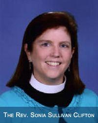

The Power of Gratitude

“Gratitude unlocks the fullness of life. It turns what we have into enough, and more. It turns denial in acceptance, chaos to order, confusion to clarity. It can turn a meal into a feast, a house into a home, a stranger into a friend.” Melody Beattie
I have spent the last 18 months at St. Matthew’s in continual gratitude.
I stay amazed at how so many of you are always sharing your time and your talents in small and huge ways. I am inspired by you! As I work with you and sit with you, I am awed and I smile broadly. There are times, however, in the last six weeks particularly, that I have found myself caught up in what has to get done and when it has to be done and who can do it. This is not bad in and of itself, except it has gotten in the way of gratitude and happiness. I found myself so focused on what was to be, that I failed to be grateful for what is.
I wonder how often this happens to other people—how often do we get so busy making a living that we forget to make a life? How often do we get so focused on planning the day and the week, that we forget to appreciate the moment? How often do we get caught up in what we can’t do/don’t have/don’t know that we forget to be thankful for what we can do, what we do have, and what we do know?
Experiencing and expressing gratitude is an important spiritual practice.
It opens the heart. Gratitude is an emotion of connectedness and reminds us that we are not in this world alone. William James reminds us that “the deepest craving of human nature is the need to be appreciated.” And Thornton Wilder’s words of wisdom ring true, especially when we understand that “treasures” are not things, but the people in our lives.
“We can only be said to be alive in those moments when our hearts are conscious of our treasures.”
If it has been awhile since you actually made a gratitude list, I’d encourage you to do it. It might seem trivial, but there is nothing too small for which to be thankful. Often we just take the small stuff for granted and assume others know of our gratitude for the big stuff. After you make your list, then I encourage you to take the time to say “thank you.”